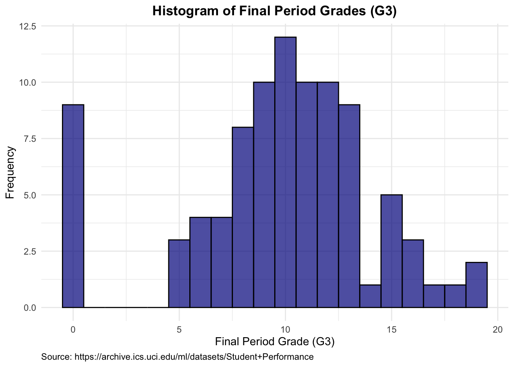
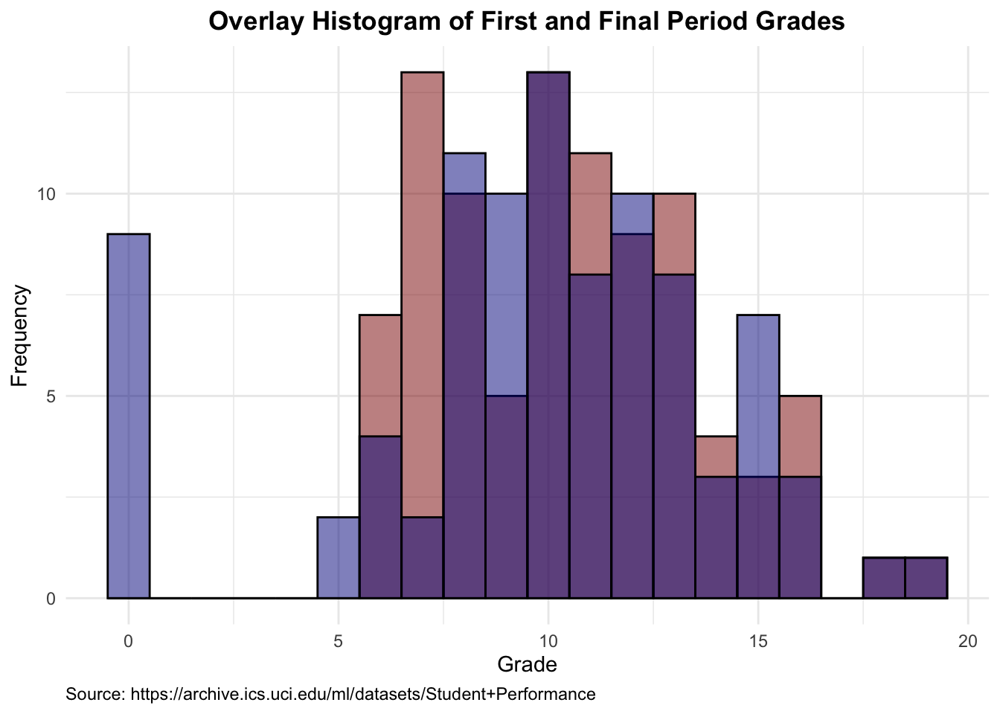

Task 1: Converting EPL Football Results into a League Table
# Set CRAN mirror non-interactivelyoptions(repos =c(CRAN ="https://cran.rstudio.com/"))# Install and load the tidyverse packageif (!requireNamespace("tidyverse", quietly =TRUE)) {install.packages("tidyverse")}library(tidyverse)library(gt)# Read the CSV files into tibblesepl_results <-read_csv("data/epl/epl_results.csv")
Rows: 20 Columns: 21
── Column specification ────────────────────────────────────────────────────────
Delimiter: ","
chr (21): home_team, ars, avl, bou, bha, bur, che, cry, eve, lei, liv, mci, ...
ℹ Use `spec()` to retrieve the full column specification for this data.
ℹ Specify the column types or set `show_col_types = FALSE` to quiet this message.
epl_teams <-read_csv("data/epl/epl_teams.csv")
Rows: 20 Columns: 2
── Column specification ────────────────────────────────────────────────────────
Delimiter: ","
chr (2): name, abbr
ℹ Use `spec()` to retrieve the full column specification for this data.
ℹ Specify the column types or set `show_col_types = FALSE` to quiet this message.
# A tibble: 20 × 2
name abbr
<chr> <chr>
1 Arsenal ars
2 Aston Villa avl
3 Bournemouth bou
4 Brighton & Hove Albion bha
5 Burnley bur
6 Chelsea che
7 Crystal Palace cry
8 Everton eve
9 Leicester City lei
10 Liverpool liv
11 Manchester City mci
12 Manchester United mun
13 Newcastle United new
14 Norwich City nor
15 Sheffield United shu
16 Southampton sou
17 Tottenham Hotspur tot
18 Watford wat
19 West Ham United whu
20 Wolverhampton Wanderers wol
1.1 Generate a League Table from the EPL Results
# Convert match results to points, goal difference, and goals scoredresults_long <- epl_results %>%pivot_longer(cols =-home_team, names_to ="away_team", values_to ="result") %>%filter(result !="-") %>%separate(result, into =c("home_goals", "away_goals"), sep ="-", convert =TRUE) %>%mutate(home_points =case_when( home_goals > away_goals ~3, home_goals < away_goals ~0,TRUE~1 ),away_points =case_when( home_goals > away_goals ~0, home_goals < away_goals ~3,TRUE~1 ),home_goal_diff = home_goals - away_goals,away_goal_diff = away_goals - home_goals )# Compute statistics for home and away teamshome_stats <- results_long %>%group_by(home_team) %>%summarize(points =sum(home_points),goal_diff =sum(home_goal_diff),goals_for =sum(home_goals),goals_against =sum(away_goals) ) %>%left_join(epl_teams, by =c("home_team"="abbr")) %>%rename(team = name)# Compute statistics for away teamsaway_stats <- results_long %>%group_by(away_team) %>%summarize(points =sum(away_points),goal_diff =sum(away_goal_diff),goals_for =sum(away_goals),goals_against =sum(home_goals) ) %>%left_join(epl_teams, by =c("away_team"="abbr")) %>%rename(team = name)# Combine home and away statistics and compute the final league tableleague_table <- home_stats %>%select(team, points, goal_diff, goals_for, goals_against) %>%bind_rows(away_stats %>%select(team, points, goal_diff, goals_for, goals_against)) %>%group_by(team) %>%summarize(points =sum(points),goal_diff =sum(goal_diff),goals_for =sum(goals_for) ) %>%arrange(desc(points), desc(goal_diff), desc(goals_for)) %>%mutate(rank =row_number()) %>%select(rank, team, points, goal_diff, goals_for)# Print the league tableprint(league_table)
# A tibble: 20 × 5
rank team points goal_diff goals_for
<int> <chr> <dbl> <int> <int>
1 1 Liverpool 99 52 85
2 2 Manchester City 81 67 102
3 3 Manchester United 66 30 66
4 4 Chelsea 66 15 69
5 5 Leicester City 62 26 67
6 6 Tottenham Hotspur 59 14 61
7 7 Wolverhampton Wanderers 59 11 51
8 8 Arsenal 56 8 56
9 9 Sheffield United 54 0 39
10 10 Burnley 54 -7 43
11 11 Southampton 52 -9 51
12 12 Everton 49 -12 44
13 13 Newcastle United 44 -20 38
14 14 Crystal Palace 43 -19 31
15 15 Brighton & Hove Albion 41 -15 39
16 16 West Ham United 39 -13 49
17 17 Aston Villa 35 -26 41
18 18 Bournemouth 34 -25 40
19 19 Watford 34 -28 36
20 20 Norwich City 21 -49 26
1.2 Improve Visualization Using gt Functions
# Improve the visualization of the league table using gtleague_table %>%gt() %>%tab_header(title =md("English Premier League 2019-2020 Season League Table") ) %>%data_color(columns =c(points, goal_diff, goals_for),fn = scales::col_numeric(palette =c("red", "yellow", "green"),domain =NULL ) ) %>%cols_label(rank ="Rank",team ="Team",points ="Points",goal_diff ="Goal Difference",goals_for ="Goals For" ) %>%tab_options(table.font.names ="Arial",table.font.size =12,table.background.color ="white",heading.title.font.size =16,heading.title.font.weight ="bold" )
English Premier League 2019-2020 Season League Table
Rank
Team
Points
Goal Difference
Goals For
1
Liverpool
99
52
85
2
Manchester City
81
67
102
3
Manchester United
66
30
66
4
Chelsea
66
15
69
5
Leicester City
62
26
67
6
Tottenham Hotspur
59
14
61
7
Wolverhampton Wanderers
59
11
51
8
Arsenal
56
8
56
9
Sheffield United
54
0
39
10
Burnley
54
-7
43
11
Southampton
52
-9
51
12
Everton
49
-12
44
13
Newcastle United
44
-20
38
14
Crystal Palace
43
-19
31
15
Brighton & Hove Albion
41
-15
39
16
West Ham United
39
-13
49
17
Aston Villa
35
-26
41
18
Bournemouth
34
-25
40
19
Watford
34
-28
36
20
Norwich City
21
-49
26
In the improved visualization, we:
Added a Title:
The title “English Premier League 2019-2020 Season League Table” clearly indicates the table’s content.
Colored Columns:
Points Column: Applied a gradient from red (low points) to green (high points) to highlight team performance.
Goal Difference (goal_diff) Column: Used a gradient from red (negative goal difference) to green (positive goal difference) to indicate defensive performance.
Goals For (goals_for) Column: Implemented a gradient from red (low goals) to green (high goals) to indicate offensive performance.
Styled the Table:
Utilized the Arial font for improved readability.
Adjusted font sizes to enhance clarity and visual appeal.
Task 2: Finding and Visualizing a Real-World Dataset
2.1 Use R Code to Validate Conditions C, D, and E for Your Data
Loading the Dataset
# Load the dataset from local filestudent_data <-read.csv("data/student-mat.csv", header =TRUE, sep =";")
This data (Source) approaches student achievement in secondary education (math) of two Portuguese schools. The data attributes include student grades, demographic, social, and school-related features, and it was collected by using school reports and questionnaires.
Condition C: Validating Condition: More than 200 Observations
# Validate condition: More than 200 observationsnum_observations <-nrow(student_data)cat("Number of observations:", num_observations, "\n")
Number of observations: 395
Condition D: Validating Condition: Continuous Numerical Data
Condition E: Validating Condition: At Least Two Groups with Roughly Balanced Observations
# Validate condition: At least two groups with roughly balanced observationsgroup_counts <- student_data |>group_by(school) |>summarise(count =n()) |>arrange(desc(count))gt_preview(group_counts)
school
count
1
GP
349
2
MS
46
Drop the extra rows to make the dataset less than 200 and also more balanced
library(dplyr)# Define the desired number of observations per group to make the total < 200target_per_group <-46# Sample the data to achieve the target size for each groupbalanced_data <- student_data |>group_by(school) |>sample_n(target_per_group, replace =FALSE) |>ungroup()# Validate the new group countsnew_group_counts <- balanced_data |>group_by(school) |>summarise(count =n()) |>arrange(desc(count))gt_preview(new_group_counts)
school
count
1
GP
46
2
MS
46
# Validate the new number of observationsnew_num_observations <-nrow(balanced_data)cat("New number of observations:", new_num_observations, "\n")
New number of observations: 92
2.2 Plot 1 – Generate a Histogram for One of the Quantitative Variables
<<<<<<< Updated upstream Creating a Basic Histogram ======= We check for duplicated points in the dataset, ensuring that there are pairs of data points with identical or nearly identical values. This is important for demonstrating strategies to mitigate overplotting. We also display a few rows of the duplicated points to visually confirm their presence.
2.2 Plot 1 – Generate a Scatter Plot Using geom_point()
Creating a Basic Scatter Plot >>>>>>> Stashed changes
# Plot 1: Basic histogramhistogram_G1 <- balanced_data |>ggplot(aes(x = G1)) +geom_histogram(binwidth =1, fill ="darkred", color ="black", alpha =0.7) +labs(title ="Histogram of First Period Grades (G1)",x ="First Period Grade (G1)",y ="Frequency",caption ="Source: https://archive.ics.uci.edu/ml/datasets/Student+Performance" ) +theme_minimal() +theme(plot.title =element_text(hjust =0.5, face ="bold"),plot.caption =element_text(hjust =0) )print(histogram_G1)
We create a basic histogram to visualize the distribution of the first period grades (G1). The bins are colored dark red with black borders and are slightly transparent to help with visibility.
2.3 Plot 2 – Generate a Histogram for Another Quantitative Variable
Creating a Basic Histogram for the Final Grades
# Plot 2: Basic histogram for final gradeshistogram_G3 <- balanced_data |>ggplot(aes(x = G3)) +geom_histogram(binwidth =1, fill ="darkblue", color ="black", alpha =0.7) +labs(title ="Histogram of Final Period Grades (G3)",x ="Final Period Grade (G3)",y ="Frequency",caption ="Source: https://archive.ics.uci.edu/ml/datasets/Student+Performance" ) +theme_minimal() +theme(plot.title =element_text(hjust =0.5, face ="bold"),plot.caption =element_text(hjust =0) )print(histogram_G3)

We create a basic histogram to visualize the distribution of the final period grades (G3). The bins are colored dark blue with black borders and are slightly transparent to help with visibility.
2.4 Plot 3 – Overlay Histograms of Both Quantitative Variables
Creating an Overlay Histogram
# Plot 3: Overlay histogram of G1 and G3overlay_histogram <- balanced_data |>ggplot() +geom_histogram(aes(x = G1), binwidth =1, fill ="darkred", color ="black", alpha =0.5) +geom_histogram(aes(x = G3), binwidth =1, fill ="darkblue", color ="black", alpha =0.5) +labs(title ="Overlay Histogram of First and Final Period Grades",x ="Grade",y ="Frequency",caption ="Source: https://archive.ics.uci.edu/ml/datasets/Student+Performance" ) +theme_minimal() +theme(plot.title =element_text(hjust =0.5, face ="bold"),plot.caption =element_text(hjust =0) )print(overlay_histogram)

We create an overlay histogram to visualize the distribution of both the first period grades (G1) and the final period grades (G3) in the same plot. This allows for comparison between the two distributions. The bins for G1 are colored dark red, and the bins for G3 are colored dark blue, both with black borders and slight transparency.
Discussion and Insights
The histograms provide a clear view of the distribution of grades. The first period grades (G1) and the final period grades (G3) show a similar pattern, suggesting consistency in student performance throughout the course. The overlay histogram helps to compare the two distributions directly, revealing any shifts or trends in performance from the first to the final period.
ggplot(morley, aes(x = Speed, fill =factor(Expt))) +geom_histogram(binwidth =20, color ="black", alpha =0.6) +# Applying fill color to histogramsfacet_wrap(~Expt, scales ="free_x") +labs(title ="Histograms of Measured Speeds by Experiment",x ="Speed (in km/s minus 299,000)",y ="Count",caption ="R data set 'morley'" ) +theme_minimal() +# Using a minimal theme for a cleaner looktheme(legend.position ="none",plot.title =element_text(hjust =0.5, face ="bold", size =14),plot.subtitle =element_text(hjust =0.5, face ="italic", size =12),axis.text.x =element_text(angle =45, vjust =1, hjust =1, size =10),axis.title.x =element_text(face ="bold", size =12),axis.title.y =element_text(face ="bold", size =12),plot.caption =element_text(size =8) ) +scale_fill_brewer(palette ="Set2") # Using the same color palette
3.6 Discuss Your Choice Among the 4 Visualization Plots
1. Plot 1 - Scatter Plot of Experiment Number vs. Measured Speeds
Pros:
Simplicity: Easy to understand and interpret.
Individual Data Points: Each measurement is clearly visible, helping to identify exact values.
Outliers Highlighted: Outliers are easily noticeable.
Cons: - Overplotting: Multiple data points with the same value can overlap, making it difficult to see the exact number of occurrences. - Lack of Distribution Information: Does not provide a clear view of the data distribution within each experiment.
2. Plot 2 - Box Plot of Measured Speeds by Experiment
Pros: - Summarizes Data Distribution: Clearly shows the median, quartiles, and potential outliers. - Comparison: Makes it easy to compare the distribution across different experiments.
Cons: - Visual Clutter: Can become cluttered with a large number of outliers or tightly packed data points. - Limited Distribution Detail: Does not show the density or modality of the data within each group.
3. Plot 3 - Violin Plot of Measured Speeds by Experiment
Pros: - Distribution Density: Shows the density and modality of the data, providing a clear view of the distribution’s shape. - Combination of Plots: Includes elements of a box plot (median, quartiles) and individual data points, providing a comprehensive view.
Cons: - Visual Clutter: Can be visually overwhelming with many elements combined. - Complexity: May be difficult for some audiences to interpret.
4. Plot 4 - Faceted Histograms of Measured Speeds by Experiment
Pros: - Distribution Visualization: Clearly shows the distribution of data within each experiment. - Easy to Interpret: Simple and straightforward, making it easy to understand the data spread.
Cons: - No Individual Data Points: Does not show individual measurements. - No Summary Statistics: Lacks a summary of the median, quartiles, and outliers.
Best Visualization
Among the presented graphs, the Violin Plot stands out as the best option for comprehensively visualizing the dataset. This plot effectively combines the advantages of both violin plots and box plots, offering a detailed view of the data distribution while also providing essential summary statistics.
Distribution Density: The violin plot’s smooth shapes reveal the density and modality of the data, giving an immediate sense of the distribution’s spread and central tendencies.
Summary Statistics: The overlaid box plots succinctly highlight the median, quartiles, and potential outliers.
Individual Data Points: The jittered points ensure that all observations are visible, mitigating issues of overplotting.
Despite the potential for visual clutter, this graph’s rich detail makes it highly informative for audiences familiar with such complex visualizations. Therefore, the Violin Plot is the optimal choice for in-depth analysis and presentation of the Morley dataset’s measured speeds across different experiments, balancing visual appeal with comprehensive data representation.